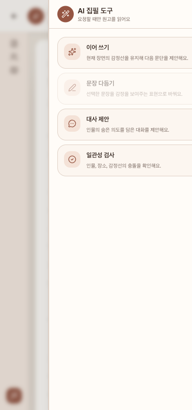

http://127.0.0.1:4173/projects/silver-garden/write의
WritingToolPanel에 한정해 AI 도구 열기, 선택 전/후 문장 다듬기,
이어 쓰기, 대사 제안, 일관성 검사, 제안 닫기·원고 적용, 패널 닫기,
키보드·포커스·세로 스크롤과 데스크톱·모바일 레이아웃을 검사했다.
제외 범위
다른 라우트·컴포넌트 감사, 실제 LLM·backend, 인증, 외부 네트워크, 공용
Sheet의 다른 소비자, 원고 자동 저장 자체, 제품 코드·테스트·설정·기존 문서
수정과 새 서버 실행은 제외했다. 데이터 변경은 개발 MSW 원고 상태에만 제한하고
각 확정 재현 전 session seed를 초기화했다.
실행 환경
대상 및 서버
공유 Vite/MSW 127.0.0.1:4173, query 없음, 인증 없음
시작 데이터
clean silver-garden seed, 활성 장면 silver-garden-scene-1, 기본 원고와 서윤·도현 인물 데이터
뷰포트
375x800, 1280x800, 1440x800
브라우저 준비
planner_setup_page를 project 인자 없이 정확히 1회 호출했다.
실행 기준
7eff1ea85ea67fb4233b1797f65496dc30274797 · main
기존 변경
시작 시 다른 작업의 삭제 표시 1개와 미추적 보고서·문서·증거를 확인했으며 수정·복원·삭제하지 않았다.
결과 요약
확정1
등록1
중복0
제외2
등록한 버그
심각도 Medium
375px 모바일 시트에서 AI 도구 닫기 버튼과 패널 오른쪽이 화면 밖으로 이탈한다
티켓
#13 · ready
최소 재현 절차
MSW silver-garden seed를 초기화하고 375x800에서 지정 라우트를 연다.
왼쪽 하단의 AI 도구 열기 버튼을 실행한다.
모바일 AI 집필 도구 dialog와 내부 aside, AI 도구 닫기 버튼의 경계를 확인한다.
기대 결과
패널 헤더, 닫기 버튼, 네 도구 카드와 제안 영역이 모바일 Sheet 폭 안에 들어가고 모든 컨트롤이 화면에서 보이며 포인터와 키보드로 실행되어야 한다.
실제 결과
viewport는 375px, dialog는 94..375px인데 내부 패널은 95..431px이다. 닫기 버튼도 387..415px에 있어 전체가 viewport 밖이고 카드 오른쪽이 잘린다.
2회 clean-state 증거
각 실행 전에 romance-agent:msw:manuscripts:v1 session 저장소를 지우고 라우트를 다시 열었다. 두 실행 모두 동일한 잘림을 보였고 2차 기하 측정에서 closeInViewport=false를 기록했다.
사용자 영향
모바일 사용자는 패널의 명시적인 닫기 버튼을 보거나 포인터로 누를 수 없고 도구 카드의 오른쪽 정보를 온전히 읽을 수 없다. Escape는 동작하지만 포인터·터치 사용자의 기본 닫기 경로를 대체하지 못한다.
요구사항
frontend/docs/frontend-coding-rules.md의 반응형 상태, 키보드 호환, 접근 가능한 이름과 보이는 포커스 요구 및 지정된 모바일 패널 닫기 흐름을 충족하지 못한다.
확인 위치와 가설
frontend/src/components/ui/sheet.tsx의 모바일 오른쪽 Sheet는 w-3/4이고 frontend/src/modules/writing-assistant/ui/writing-tool-panel.tsx의 aside는 w-[21rem]이다. 고정 자식 폭이 Sheet보다 큰 것이 원인이라는 설명은 소스 기반 가설이며 구현 테스트로 확정해야 한다.
1차 clean-state: 시트 오른쪽 가장자리에서 패널 카드와 헤더가 잘리고 닫기 버튼이 보이지 않는다.

2차 clean-state: 동일 시각 결과와 함께 panel right 431px, close left 387px를 측정했다.
중복된 관찰
확정된 중복은 없다. 등록 직전 fresh ticket-worker list --json의 #1–#12와
기존 버그 보고서·설계·계획을 확인했으며 모바일 WritingToolPanel 고정 폭 또는
닫기 버튼 viewport 이탈을 다루는 항목이 없었다. #1의 집필 에디터 세로 스크롤 경계는
별도 결함이다.
제외한 관찰
/favicon.ico 404는 WritingToolPanel 흐름과 무관한 정적 자산 요청이라 제외했다.
제안 닫기·적용 및 패널 닫기 뒤 활성 요소가 BODY가 되는 현상은 각 변형을 clean
상태에서 두 번 재현하지 못했으므로 확정·등록하지 않았고 미확인 항목으로 남겼다.
수행한 검사
정상 경로: 이어 쓰기와 대사 제안이 삽입 제안을 표시하고 원고에 적용 뒤 본문에 반영되는 것을 확인했다.
문장 다듬기: 선택 전 disabled, 원고 범위 선택 후 enabled, 교체 제안 내용을 확인했다.
일관성 검사: 진단 제안을 표시하고 원고에 적용 없이 닫기만 제공하는 것을 확인했다.
제안 닫기·스크롤: 제안 카드 닫기와 패널 내부 overflow-y-auto 경계를 확인했다.
반응형: 1280x800과 1440x800에서는 패널 및 닫기 버튼이 viewport 안에 있었고, 375x800에서 결함을 두 번 재현했다.
키보드·회복: 모바일 dialog의 focus trap과 Escape 닫기가 동작하는 것을 확인했다.
콘솔·네트워크: 제품 콘솔 오류 없이 favicon 404만 기록했고 workspace와 story-bible GET은 MSW 200이었다. AI 제안 생성은 외부 요청을 만들지 않았다.
zellij-agent ticket-worker list --json: 등록 전 중복 검사 및 등록 후 #13의 ready와 모든 등록 필드 일치를 fresh JSON으로 확인했다.
.codex/agents/tests/validate-bug-hunter.sh: 보고서 구조와 모든 생성 HTML을 검증했다.
제약 및 미확인 항목
실제 모바일 OS의 터치·소프트 키보드와 보조기술 음성 출력은 확인하지 않았다.
실패 응답과 복구는 로컬 동기 제안 생성이라 도달 가능한 네트워크 실패 상태가 없었고,
실제 LLM·backend·외부 네트워크는 범위에서 제외했다. 제안 닫기·적용과 패널 닫기 후
포커스 복원은 1회 관찰만 있어 미확정이다. 제품 코드와 테스트는 수정하지 않았으며
기존 작업 트리 변경은 모두 보존했다.